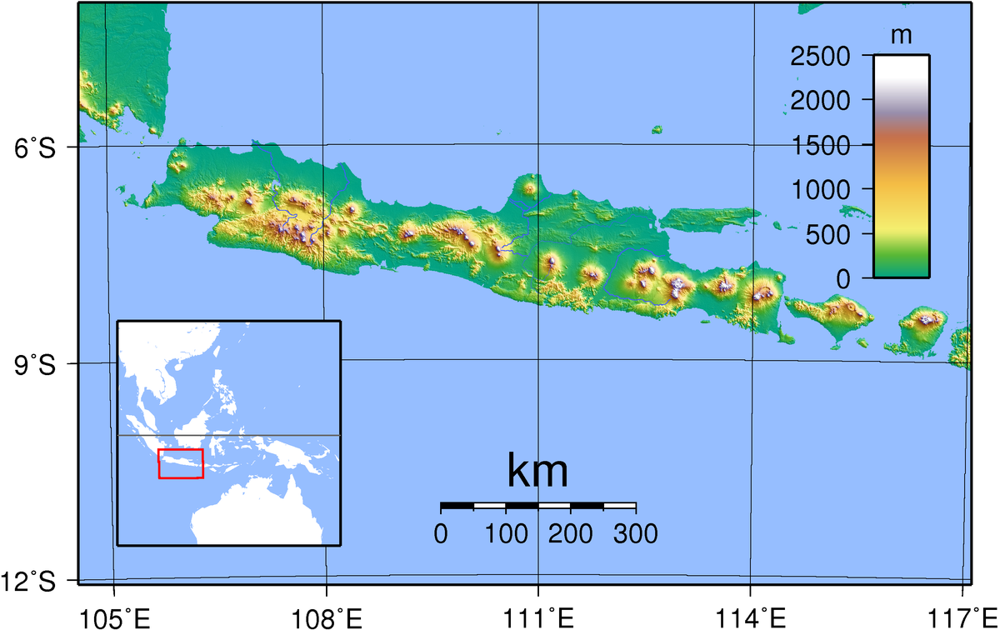

Gunung Tertinggi di Jawa
Pulau Jawa

Jawa
Jawa (Jawa: ꦗꦮ, translit. Jåwå, Sunda: ᮏᮝ, translit. Jawa) adalah sebuah pulau di Indonesia yang terletak di kepulauan Sunda Besar dan merupakan pulau terluas ke-13 di dunia. Jumlah penduduk di Pulau Jawa sekitar 150 juta. Pulau Jawa dihuni oleh 60% total populasi Indonesia. Angka ini menurun jika dibandingkan dengan sensus penduduk tahun 1905 yang mencapai 80,6% dari seluruh penduduk Indonesia. Penurunan penduduk di Pulau Jawa secara persentase diakibatkan perpindahan penduduk (transmigrasi) dari Pulau Jawa ke daerah lain di Indonesia. Ibu kota Indonesia adalah Jakarta dan terletak di Jawa bagian barat laut (tepatnya di ujung paling barat Jalur Pantura).
Jawa adalah pulau yang relatif muda dan sebagian besar terbentuk dari aktivitas vulkanik. Deretan gunung-gunung berapi membentuk jajaran yang terbentang dari timur hingga barat pulau ini, dengan dataran endapan aluvial sungai di bagian utara. Pulau Jawa dipisahkan oleh selat dengan beberapa pulau utama, yakni Pulau Sumatra di barat laut, Pulau Kalimantan di utara, Pulau Madura di timur laut, dan Pulau Bali di sebelah timur. Sementara itu di sebelah selatan pulau Jawa terbentang Samudra Hindia.
Banyak kisah sejarah Indonesia berlangsung di pulau ini. Dahulu, Jawa adalah pusat beberapa kerajaan Hindu-Buddha, kesultanan Islam, pemerintahan kolonial Hindia Belanda, serta pusat pergerakan kemerdekaan Indonesia. Pulau ini berdampak besar terhadap kehidupan sosial, politik, dan ekonomi Indonesia.Sebagian besar penduduknya bertutur dalam tiga bahasa utama. Bahasa Jawa adalah bahasa ibu dari 100 juta penduduk Indonesia, dan sebagian besar penuturnya berdiam di Pulau Jawa. Sebagian besar penduduk adalah orang-orang dwibahasa, yang berbahasa Indonesia baik sebagai bahasa pertama maupun kedua. Dua bahasa penting lainnya adalah bahasa Sunda dan bahasa Betawi. Sebagian besar penduduk Pulau Jawa beragama Islam. Namun tetap terdapat beragam aliran kepercayaan, agama, kelompok etnis, serta budaya di pulau ini. Pulau ini secara administratif terbagi menjadi enam provinsi, yaitu Jawa Barat, Jawa Tengah, Jawa Timur, dan Banten, serta dua wilayah khusus, yaitu DKI Jakarta dan DI Yogyakarta.